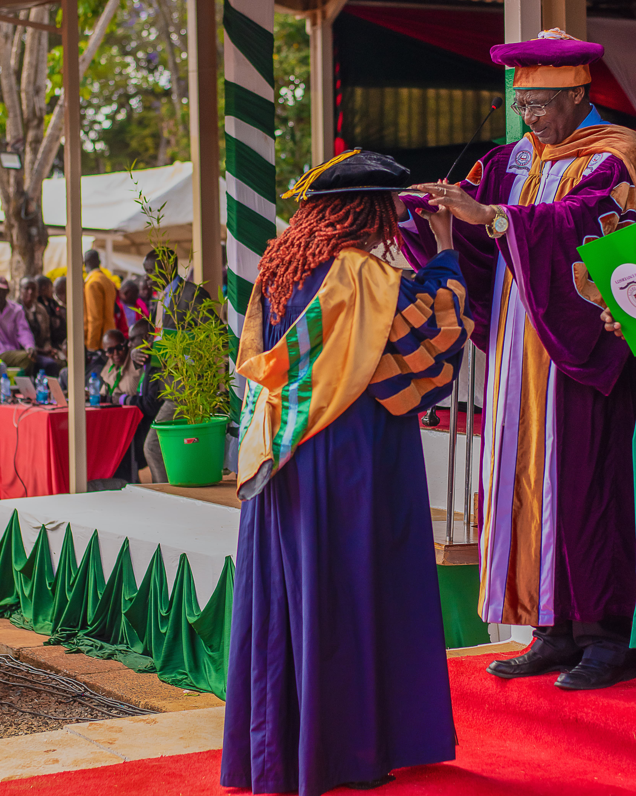
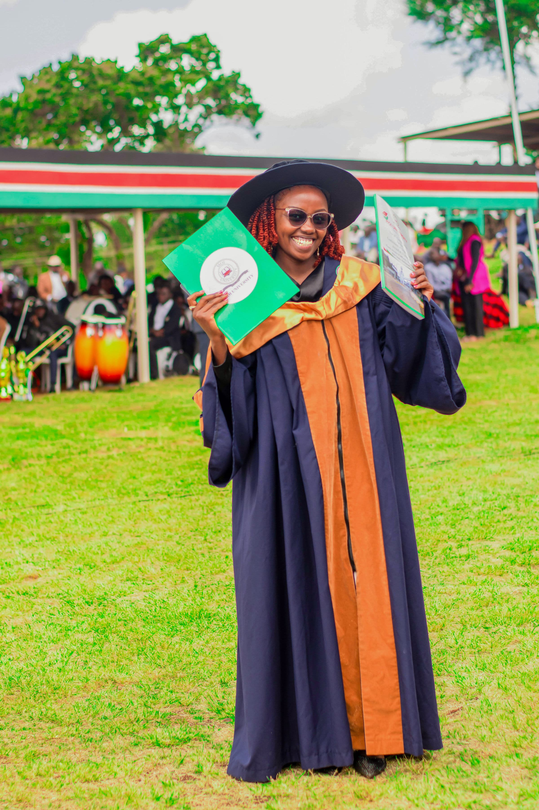
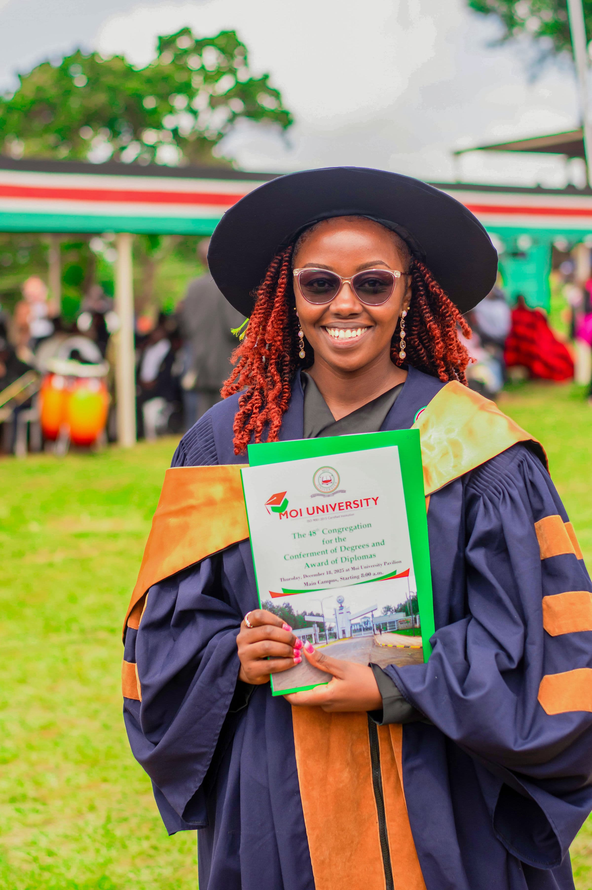

Announcements
In case you have any news to share, please contact the committee to include it on our website.
Congratulations to Dr. Dennis Kinoti Gikunda on a successful PhD defence!
The African Enumerative Combinatorics Community (AECC) warmly congratulates Dr. Dennis Kinoti Gikunda on the successful defence of his PhD at Stellenbosch University. This achievement reflects his dedication, scholarly excellence, and meaningful contributions to the field of combinatorics. We are proud to celebrate this important milestone with him.
We also extend our sincere congratulations to his supervisor, Prof. Dimbinaina Ralaivaosaona (Naina), a valued member of the AECC Committee, for his mentorship and leadership. We look forward to the continued contributions of both Dr. Gikunda and Prof. Ralaivaosaona as they help advance the mission and impact of AECC.
Congratulations to Prof. Dimbinaina Ralaivaosaona on being promoted to Professor!
The African Enumerative Combinatorics Community (AECC) warmly congratulates our valued member and committee member, Professor Dimbinaina Ralaivaosaona on his promotion to Associate Professor at Stellenbosch University in South Africa. We support this recognition of his excellent contributions to research as well as mentoring of the next generation of researchers in Combinatorics and Number Theory.
Congratulations to Dr. Yvonne Kariuki on her PhD graduation!
  AECC celebrates this important milestone and congratulates her supervisor, Dr. Isaac Owino Okoth (Maseno University, Kenya), for his dedication and mentorship.
Both are devoted and active members of the African Enumerative Combinatorics Community, with Dr. Kariuki serving on the AECC Committee.